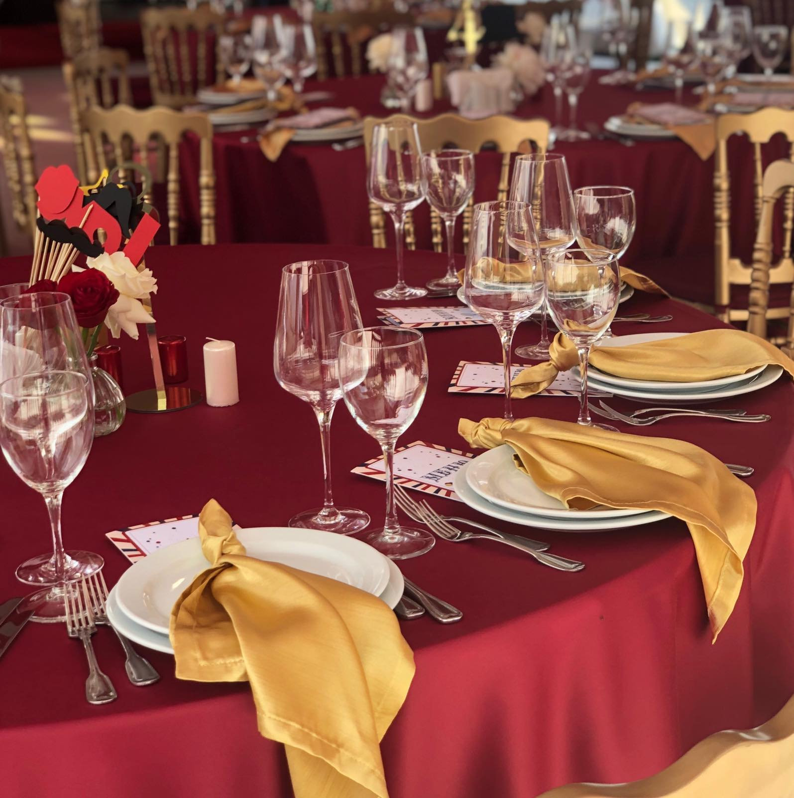

Організация і проведення банкетів, фуршетів, весіль.
Свята люблять всі, особливо цікаві, незвичайні, мальовничі, красиві – такі, які надовго залишаються в пам'яті участників і гостей свята. Якщо ви не уявляєте, як провести Ваше свято, зверніться в нашу кейтерингову компанію.
Cлово "фуршет" французького походження, воно позначає "трапезну вилку". Основна перевага фуршету в тому, що закуски їдять без ножа, за допомогою однієї вилки чи навіть руками.

Банкет
У наш час обіди супроводжують різні події. Основні моменти, які впливають на вибір формату майбутнього застілля, це: привід, кількість гостей та відповідно місткість майданчика, час початку та тривалість заходу та, безумовно, бюджет.
Кава брейк
Правильно запланована та якісно проведена кава-брейк може підвищити плідність корпоративного чи ділового заходу – семінару, конференції, переговорів, презентації чи різних тренінгів. Головна мета кава-брейку – неформальне спілкування ділових партнерів.
Ми зробимо ваше застілля незабутнім
Фуршет
Cлово "фуршет" французького походження, воно позначає "трапезну вилку". Основна перевага фуршету в тому, що закуски їдять без ножа, за допомогою однієї вилки чи навіть руками.
Фуршетні закуски
Майстерні французькі кухарі довели майстерність приготування легких закусок до досконалості. Головний принцип фуршетних частування - створення зі звичайних продуктів різноманітних кулінарних шедеврів, в яких гармонійно поєднуються наявні інгредієнти. Кількість оригінальних фуршетних закусок має бути досить великою.
Особливості фуршета
Варто відзначити, що фуршет – це не просто спосіб швидкого прийому будь-якої кількості гостей із мінімальними витратами. Саме такі прийоми можуть багато що вирішити на користь Вашої кар'єри та посприяти налагодженню зв'язків із важливими для Вас людьми. Адже саме фуршет завдяки невимушеній атмосфері здатний об'єднати людей, що зібралися. Грамотно організований та проведений фуршет допоможе колегам стати друзями.
Банкет
У наш час обіди супроводжують різні події. Основні моменти, які впливають на вибір формату майбутнього застілля, це: привід, кількість гостей та відповідно місткість майданчика, час початку та тривалість заходу та, безумовно, бюджет.
Проведення банкета
Якщо Ви плануєте сімейне свято чи корпоративний захід, Вам підійдуть банкети з частковим обслуговуванням тривалістю від 2 до 10 годин. При цьому холодні закуски (салати та фрукти) виставляють «у стіл» з розрахунку 1 страву на 2-4 особи. Кожен гість може, не встаючи, взяти страву, що сподобалася, або напій в будь-якому порядку і в будь-якій кількості. Офіціанти сервірують закуски із спільних страв, наливають вина, прибирають порожній посуд. Їхнє основне завдання - винесення гарячих закусок і страв, у цьому полягає часткове обслуговування.
Проведення банкета
Цей варіант доречний на не пафосних заходах, кількість офіціантів буде набагато меншою, ніж на банкетах з повним обслуговуванням. Заходи з повним обслуговуванням - найскладніші та найвідповідальніші. Такий формат супроводжує офіційні прийоми, вручення міжнародних премій та нагород. Тривалість таких банкетів від 2 до 4 годин, починаються вони не раніше 18:00, проводяться найчастіше по четвергах, п'ятницях чи суботах.
Кава-брейк
Правильно запланована та якісно проведена кава-брейк може підвищити плідність корпоративного чи ділового заходу – семінару, конференції, переговорів, презентації чи різних тренінгів. Головна мета кава-брейку – неформальне спілкування ділових партнерів.
Кава-брейк для ділового спілкування
В Україні для перерви на каву учасників зазвичай запрошують до окремого приміщення, при цьому фіксовані місця не передбачаються. Це робить атмосферу комфортною та розкутою та дозволяє використовувати кавову паузу не тільки для підкріплення сил та вгамування спраги, але й для висловлювання цікавих ідей та налагодження ділових контактів.
Організація кава-брейка на виїзді(кейтеринг)
Як правило, для проведення ділових заходів підбираються приміщення, в яких є кафетерії або бари з усім необхідним обладнанням, меблями, посудом та офіціантами. У тих випадках, коли зустріч відбувається на природі або з будь-яких причин немає можливості організувати на місці приготування всього необхідного для кави-брейка, варто звернутися до кейтерингової компанії, яка візьме на себе організацію невеликих перерв для їжі - від приготування кави та доставки готових обідів чи продуктів їхнього приготування, до оформлення місця проведення заходу.